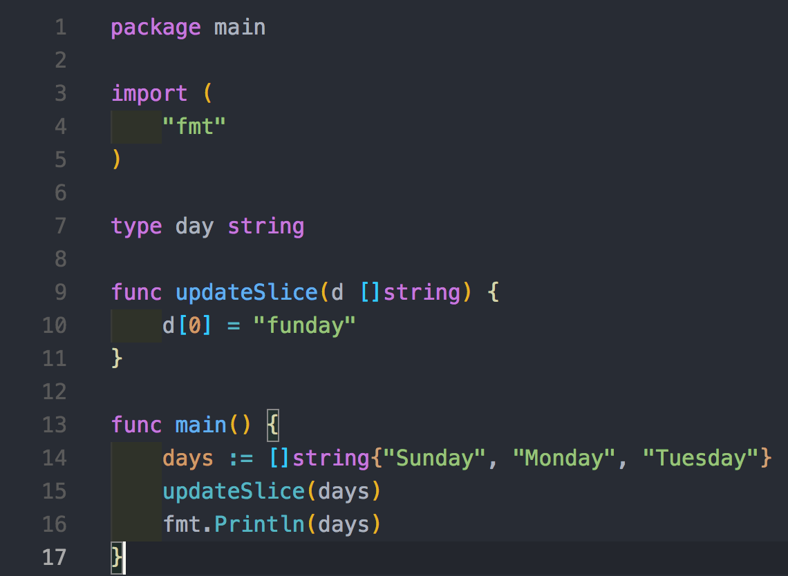

Go был разработан Google в 2007 году для API и веб-приложений. В последнее время Go стал одним из самых быстрорастущих языков программирования благодаря своей простоте, а также способности работать с многоядерными и сетевыми системами и огромными кодовыми базами.
Go, также известный как Golang, был создан для удовлетворения потребностей программистов, работающих над крупными проектами. Он завоевал популярность среди многих крупных ИТ-компаний благодаря своей простой и современной структуре и знакомому синтаксису. Компании, использующие Go в качестве языка программирования, включают Google, Uber, Twitch, Dropbox и многие другие. Go также набирает популярность среди специалистов по данным из-за его гибкости и производительности.
Разработчики Go могут получать среднюю годовую зарплату в размере 141 654 долларов США и до 261 000 долларов США.